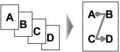
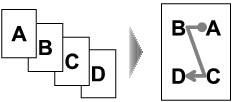
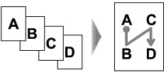
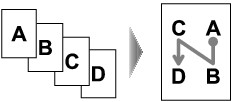

When you select 4-on-1 copy for Layout in Standard copy, you can copy four original pages onto a single sheet of paper by reducing each image. Four different layouts are available.
Press the right Function button on the Copy standby screen to display the print settings screen, then select 4-on-1 copy for Layout.
Press the right Function button to specify the advanced layout.
-
When Upper-left to right is selected
 -
When Upper-right to left is selected
 -
When Upper-left to bottom is selected
 -
When Upper-right to bottom is selected

 Note
Note-
If Device memory is full. Cannot continue process. appears on the LCD when scanning, set the print quality to Standard or reduce the number of sheets of documents, then try copying again. If the problem is not resolved, set the print quality to Fast and try copying again.
-
This function can be used in combination with Two-sided copy.
If you use this function in combination, you can copy eight original pages on one sheet of paper. In this case, four original pages are copied on each side of paper.
If you use this function in combination, select the two-sided copy setting for 2-sided and the stapling side of print paper on the Print settings screen.
For details on two-sided copy function, see Copying onto Both Sides of the Paper (Two-sided copy).
When you load the original on the Platen Glass for 4-on-1 copying:
Placing documents (platen) screen appears on the LCD after scanning each sheet of original.
Remove the sheet of original from the Platen Glass after scanning and load the next sheet on the Platen Glass, then press the OK button.
After scanning the fourth sheet of original, the machine starts copying.
Note-
If you do not need more scanning, press the left Function button. The machine starts copying.
-
You can add the copying job while printing.
-
If you use this function in combination with Two-sided copy, the Placing documents (platen) screen is displayed after scanning the fourth sheet of original is complete. Follow the on-screen instructions to scan the rest of originals.